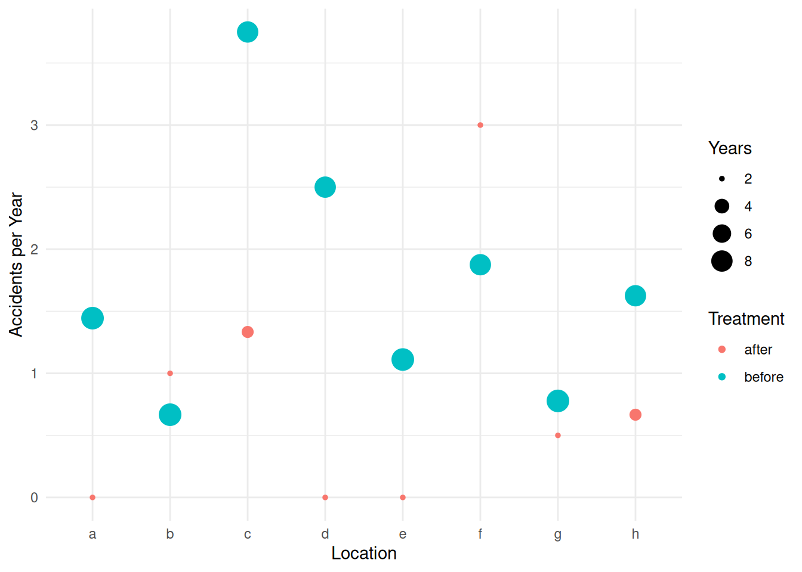
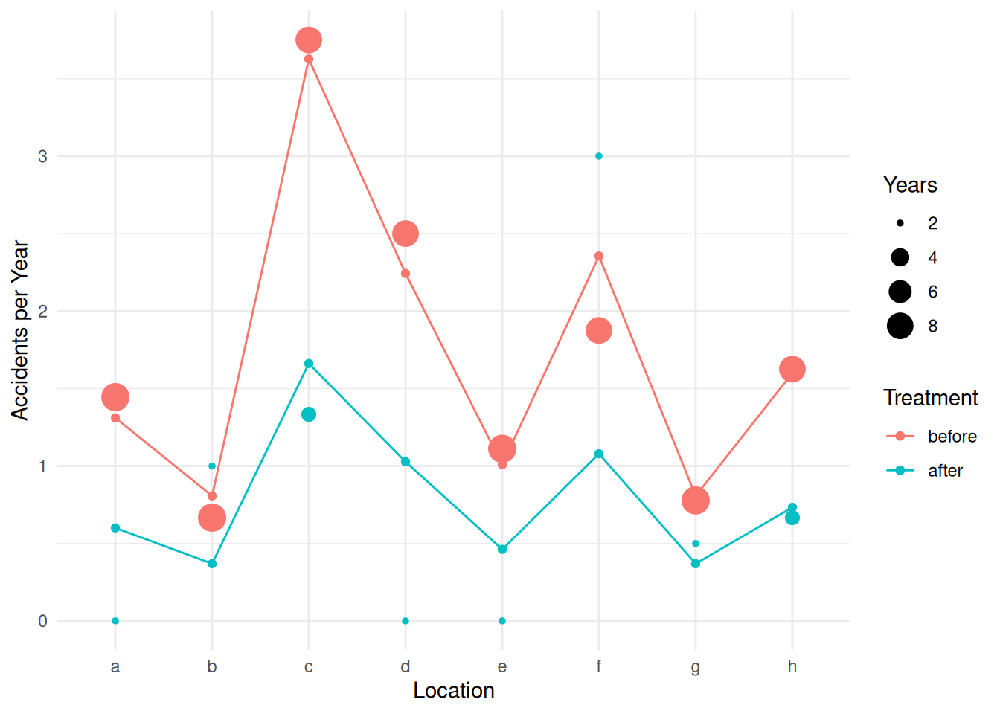
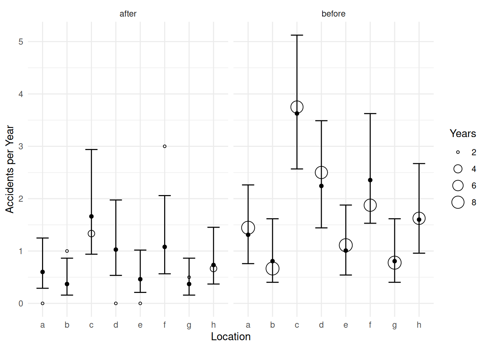
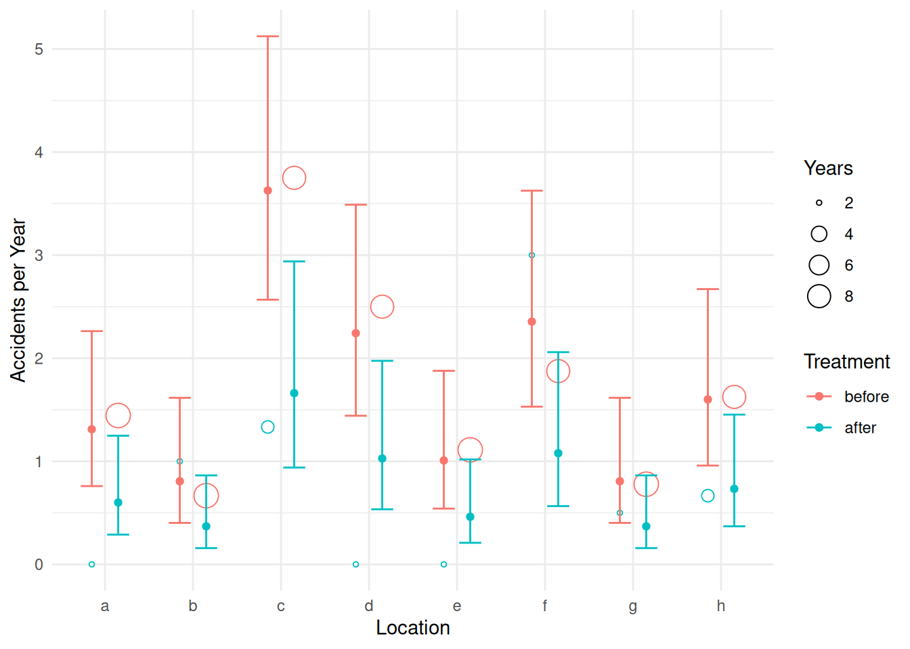
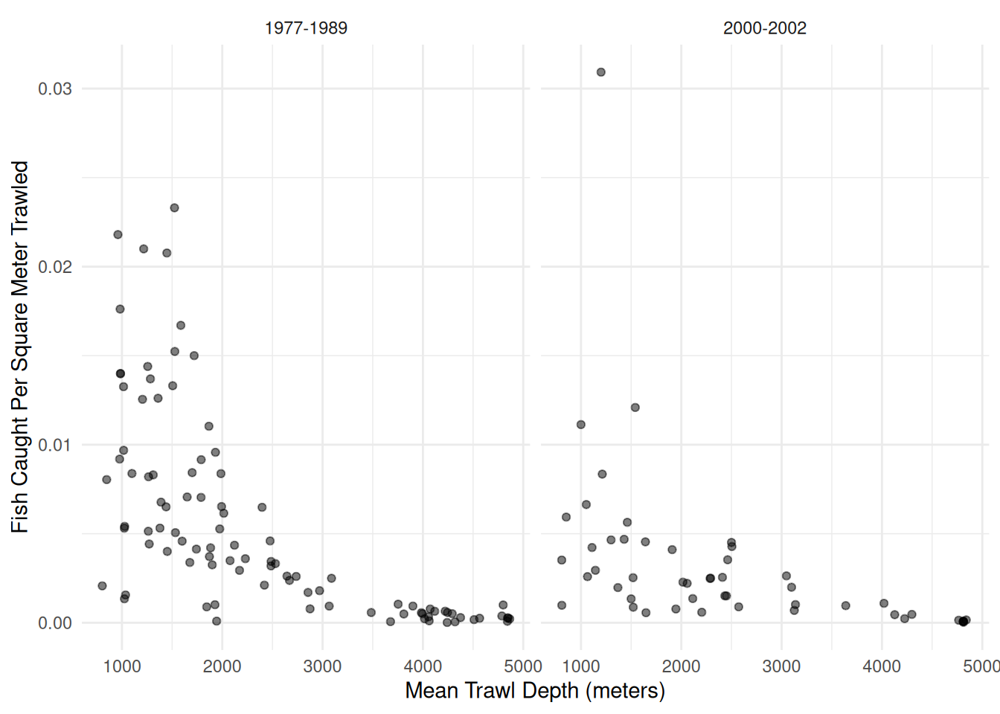
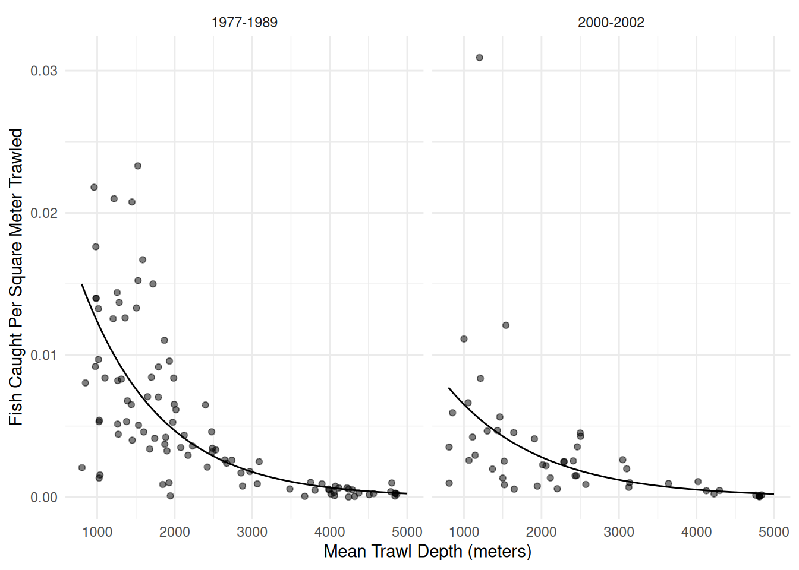
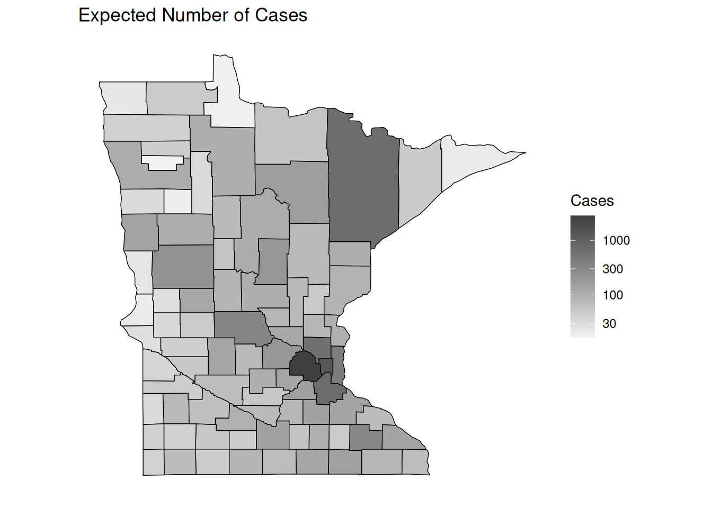
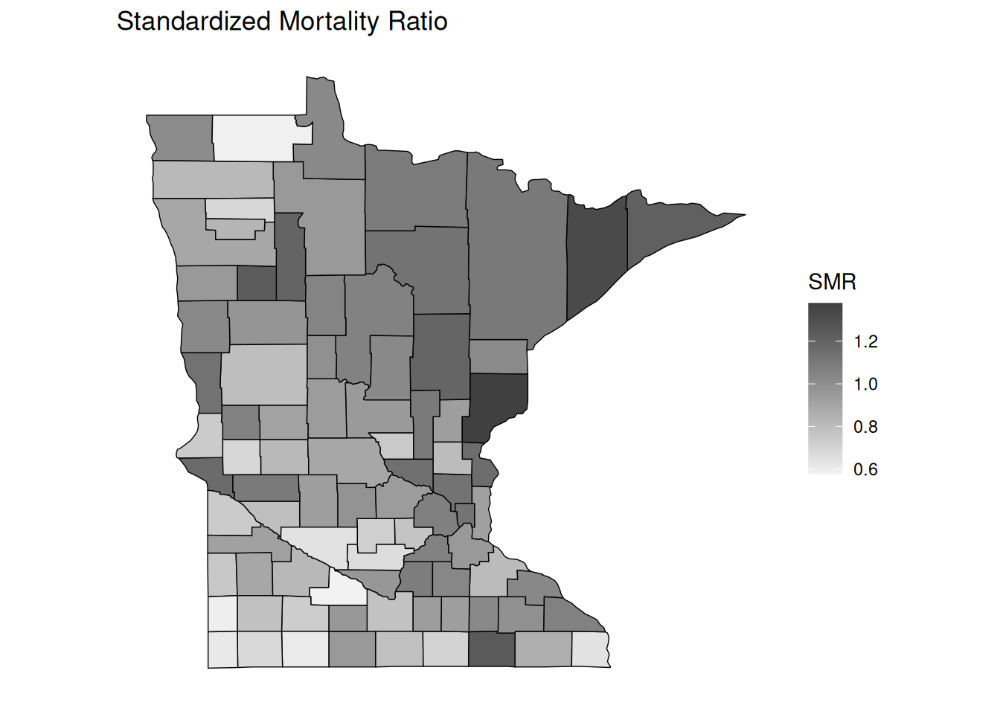
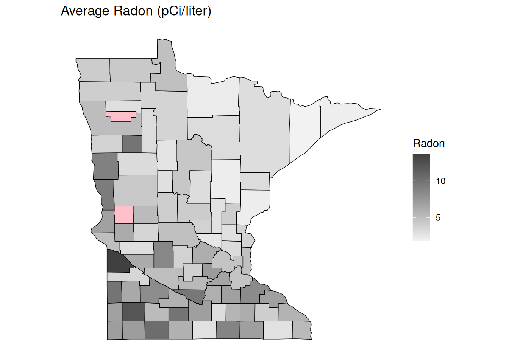

You can also download a PDF copy of this lecture.
The \(i\)-th observed rate \(R_i\) can be written as \[ R_i = C_i/S_i, \] where \(C_i\) is a count and \(S_i\) is the “size” of the interval in which the counts are observed. Examples include fish per minute, epileptic episodes per day, or defects per (square) meter. In some cases \(S_i\) is referred to as the “exposure” of the \(i\)-th observation.
Assume that the count \(C_i\) has a Poisson distribution and that \[ E(C_i) = S_i \underbrace{\exp(\beta_0 + \beta_1 x_{i1} + \cdots + \beta_k x_{ik})}_{\lambda_i}, \] where \(\lambda_i\) is the expected count per unit (e.g., per minute) so that \(S_i\lambda_i\) is then the expected count per \(S_i\) (e.g., per hour if \(S_i\) = 60, per day if \(S_i\) = 1440, or per second if \(S_i\) = 1/60). The expected rate is then \[ E(R_i) = E(C_i/S_i) = E(C_i)/S_i = \exp(\beta_0 + \beta_1 x_{i1} + \cdots + \beta_k x_{ik}), \] if we treat exposure as fixed (like we do \(x_{i1}, x_{i2}, \dots, x_{ik}\)). But rather than using \(R_i\) as the response variable we can use \(C_i\) as the response variable in a Poisson regression model where \[ E(C_i) = S_i \exp(\beta_0 + \beta_1 x_{i1} + \cdots + \beta_k x_{ik}) = \exp(\beta_0 + \beta_1 x_{i1} + \cdots + \beta_k x_{ik} + \log S_i), \] and where \(\log S_i\) is an “offset” variable (i.e., basically an explanatory variable where it’s \(\beta_j\) is “fixed” at one).
Note: If \(S_i\) is a constant for all observations so that \(S_i = S\) then we can write the model as \[ E(C_i) = \exp(\beta_0 + \beta_1 x_{i1} + \cdots + \beta_k x_{ik} + \log S_i) = \exp(\beta_0^* + \beta_1 x_{i1} + \beta_2 x_{i2} + \cdots + \beta_k x_{ik}), \] where \(\beta_0^* = \log(S) + \beta_0\) so that the offset is “absorbed” into \(\beta_0\), and we do not need to be concerned about it. Including an offset is only necessary if \(S_i\) is not the same for all observations.
Using rates as response variables in a linear or nonlinear model without accounting for \(S_i\) is not advisable because of heteroscedasticity due to unequal \(S_i\).
We have that \(E(R_i) = E(C_i)/S_i\). But \[ \mbox{Var}(R_i) = \mbox{Var}(C_i/S_i) = \mbox{Var}(C_i)/S_i^2 = E(R_i)S_i/S_i^2 = E(R_i)/S_i, \] because (a) \(\mbox{Var}(Y/c) = \mbox{Var}(Y)/c^2\) if \(c\) is a constant, \(\mbox{Var}(C_i) = E(C_i)\) because \(C_i\) has a Poisson distribution, and thus \(E(C_i) = E(R_i)S_i\). Thus the variance of the rate depends on the expected response and \(S_i\) (so larger/smaller \(S_i\), then smaller/larger variance of \(R_i)\).
We can deal with this heteroscedasticity by either (a) using an appropriate offset variable in Poisson regression or a related model or (b) using weights of \(w_i = S_i/E(R_i)\) in an iteratively weighted least squares with weights of \(w_i = S_i/\hat{y}_i\).
Software for GLMs (and sometimes linear models) will often permit
specification of an offset variable. In R this is done using
offset in the model formula.
Example: Consider the following data from an observational study of auto accidents.
library(trtools)
head(accidents) accidents years location treatment
1 13 9 a before
2 6 9 b before
3 30 8 c before
4 20 8 d before
5 10 9 e before
6 15 8 f beforep <- ggplot(accidents, aes(x = location, y = accidents/years)) +
geom_point(aes(size = years, color = treatment)) +
labs(x = "Location", y = "Accidents per Year",
size = "Years", color = "Treatment") + theme_minimal()
plot(p)
m <- glm(accidents ~ location + treatment + offset(log(years)),
data = accidents, family = poisson)
cbind(summary(m)$coefficients, confint(m)) Estimate Std. Error z value Pr(>|z|) 2.5 % 97.5 %
(Intercept) -0.510 0.373 -1.366 0.17207 -1.2924 0.177
locationb -0.486 0.449 -1.080 0.27994 -1.4122 0.378
locationc 1.018 0.326 3.117 0.00182 0.4027 1.694
locationd 0.537 0.356 1.507 0.13168 -0.1510 1.260
locatione -0.262 0.421 -0.624 0.53279 -1.1136 0.559
locationf 0.586 0.353 1.660 0.09690 -0.0939 1.304
locationg -0.486 0.449 -1.080 0.27994 -1.4122 0.378
locationh 0.199 0.379 0.526 0.59921 -0.5459 0.958
treatmentbefore 0.781 0.275 2.834 0.00459 0.2741 1.362exp(cbind(coef(m), confint(m))) 2.5 % 97.5 %
(Intercept) 0.601 0.275 1.19
locationb 0.615 0.244 1.46
locationc 2.767 1.496 5.44
locationd 1.711 0.860 3.53
locatione 0.769 0.328 1.75
locationf 1.797 0.910 3.68
locationg 0.615 0.244 1.46
locationh 1.221 0.579 2.61
treatmentbefore 2.183 1.315 3.90When using other tools like contrast or functions from
the emmeans package, be sure to specify the offset.
Typically we would use a value of one corresponding to one unit of
whatever the offset represents (e.g., space or time). Here are the rate
ratios for the treatment.
trtools::contrast(m,
a = list(treatment = "before", location = letters[1:8], years = 1),
b = list(treatment = "after", location = letters[1:8], years = 1),
cnames = letters[1:8], tf = exp) estimate lower upper
a 2.18 1.27 3.75
b 2.18 1.27 3.75
c 2.18 1.27 3.75
d 2.18 1.27 3.75
e 2.18 1.27 3.75
f 2.18 1.27 3.75
g 2.18 1.27 3.75
h 2.18 1.27 3.75trtools::contrast(m,
a = list(treatment = "after", location = letters[1:8], years = 1),
b = list(treatment = "before", location = letters[1:8], years = 1),
cnames = letters[1:8], tf = exp) estimate lower upper
a 0.458 0.267 0.786
b 0.458 0.267 0.786
c 0.458 0.267 0.786
d 0.458 0.267 0.786
e 0.458 0.267 0.786
f 0.458 0.267 0.786
g 0.458 0.267 0.786
h 0.458 0.267 0.786Here are the estimated expected number of accidents per year at
location a.
trtools::contrast(m, a = list(treatment = c("before","after"), location = "a", years = 1),
cnames = c("before","after"), tf = exp) estimate lower upper
before 1.311 0.759 2.26
after 0.601 0.289 1.25Here are the estimated expected number of accidents per
decade at location a.
trtools::contrast(m, a = list(treatment = c("before","after"), location = "a", years = 10),
cnames = c("before","after"), tf = exp) estimate lower upper
before 13.11 7.59 22.6
after 6.01 2.89 12.5When using functions from the emmeans package we use
the offset argument with the value specified on the log
scale. Here are the estimated number of accidents per decade.
library(emmeans)
emmeans(m, ~treatment|location, type = "response", offset = log(10))location = a:
treatment rate SE df asymp.LCL asymp.UCL
after 6.0 2.24 Inf 2.89 12.5
before 13.1 3.65 Inf 7.59 22.6
location = b:
treatment rate SE df asymp.LCL asymp.UCL
after 3.7 1.60 Inf 1.58 8.6
before 8.1 2.86 Inf 4.03 16.2
location = c:
treatment rate SE df asymp.LCL asymp.UCL
after 16.6 4.83 Inf 9.39 29.4
before 36.3 6.39 Inf 25.68 51.2
location = d:
treatment rate SE df asymp.LCL asymp.UCL
after 10.3 3.42 Inf 5.35 19.7
before 22.4 5.06 Inf 14.42 34.9
location = e:
treatment rate SE df asymp.LCL asymp.UCL
after 4.6 1.86 Inf 2.10 10.2
before 10.1 3.20 Inf 5.42 18.8
location = f:
treatment rate SE df asymp.LCL asymp.UCL
after 10.8 3.56 Inf 5.65 20.6
before 23.6 5.18 Inf 15.30 36.3
location = g:
treatment rate SE df asymp.LCL asymp.UCL
after 3.7 1.60 Inf 1.58 8.6
before 8.1 2.86 Inf 4.03 16.2
location = h:
treatment rate SE df asymp.LCL asymp.UCL
after 7.3 2.56 Inf 3.70 14.5
before 16.0 4.18 Inf 9.59 26.7
Confidence level used: 0.95
Intervals are back-transformed from the log scale Here is the rate ratio for the effect of treatment.
pairs(emmeans(m, ~treatment|location, type = "response", offset = log(10)), infer = TRUE)location = a:
contrast ratio SE df asymp.LCL asymp.UCL null z.ratio p.value
after / before 0.458 0.126 Inf 0.267 0.786 1 -2.834 0.0046
location = b:
contrast ratio SE df asymp.LCL asymp.UCL null z.ratio p.value
after / before 0.458 0.126 Inf 0.267 0.786 1 -2.834 0.0046
location = c:
contrast ratio SE df asymp.LCL asymp.UCL null z.ratio p.value
after / before 0.458 0.126 Inf 0.267 0.786 1 -2.834 0.0046
location = d:
contrast ratio SE df asymp.LCL asymp.UCL null z.ratio p.value
after / before 0.458 0.126 Inf 0.267 0.786 1 -2.834 0.0046
location = e:
contrast ratio SE df asymp.LCL asymp.UCL null z.ratio p.value
after / before 0.458 0.126 Inf 0.267 0.786 1 -2.834 0.0046
location = f:
contrast ratio SE df asymp.LCL asymp.UCL null z.ratio p.value
after / before 0.458 0.126 Inf 0.267 0.786 1 -2.834 0.0046
location = g:
contrast ratio SE df asymp.LCL asymp.UCL null z.ratio p.value
after / before 0.458 0.126 Inf 0.267 0.786 1 -2.834 0.0046
location = h:
contrast ratio SE df asymp.LCL asymp.UCL null z.ratio p.value
after / before 0.458 0.126 Inf 0.267 0.786 1 -2.834 0.0046
Confidence level used: 0.95
Intervals are back-transformed from the log scale
Tests are performed on the log scale Use reverse = TRUE to “flip” the rate ratio. Also for
rate ratios the size of the offset does not matter since it
“cancels-out” in the ratio. Also since there is no interaction in this
model which means the rate ratio does not depend on location, we can
omit it when using emmeans (but not
contrast).
pairs(emmeans(m, ~treatment, type = "response"), infer = TRUE) contrast ratio SE df asymp.LCL asymp.UCL null z.ratio p.value
after / before 0.458 0.126 Inf 0.267 0.786 1 -2.834 0.0046
Results are averaged over the levels of: location
Confidence level used: 0.95
Intervals are back-transformed from the log scale
Tests are performed on the log scale When using predict we need to be sure to also include
the offset amount. Again, we would use a value of one assuming we want
the number of events per unit space/time.
d <- expand.grid(treatment = c("before","after"), location = letters[1:8], years = 1)
d$yhat <- predict(m, newdata = d, type = "response")
head(d) treatment location years yhat
1 before a 1 1.311
2 after a 1 0.601
3 before b 1 0.807
4 after b 1 0.370
5 before c 1 3.627
6 after c 1 1.662p <- ggplot(accidents, aes(x = location, y = accidents/years)) +
geom_point(aes(size = years, color = treatment)) +
labs(x = "Location", y = "Accidents per Year",
size = "Years", color = "Treatment") + theme_minimal() +
geom_point(aes(y = yhat, color = treatment), data = d) +
geom_line(aes(y = yhat, group = treatment, color = treatment), data = d)
plot(p)
We can use theglmint function from the
trtools package if we want to produce confidence
intervals for plots.
d <- expand.grid(treatment = c("before","after"), location = letters[1:8], years = 1)
d$yhat <- predict(m, newdata = d, type = "response")
glmint(m, newdata = d) fit low upp
1 1.311 0.759 2.263
2 0.601 0.289 1.248
3 0.807 0.403 1.616
4 0.370 0.158 0.864
5 3.627 2.568 5.123
6 1.662 0.939 2.939
7 2.243 1.442 3.489
8 1.028 0.535 1.975
9 1.008 0.542 1.878
10 0.462 0.210 1.018
11 2.355 1.530 3.625
12 1.079 0.565 2.059
13 0.807 0.403 1.616
14 0.370 0.158 0.864
15 1.600 0.959 2.671
16 0.733 0.370 1.453cbind(d, glmint(m, newdata = d)) treatment location years yhat fit low upp
1 before a 1 1.311 1.311 0.759 2.263
2 after a 1 0.601 0.601 0.289 1.248
3 before b 1 0.807 0.807 0.403 1.616
4 after b 1 0.370 0.370 0.158 0.864
5 before c 1 3.627 3.627 2.568 5.123
6 after c 1 1.662 1.662 0.939 2.939
7 before d 1 2.243 2.243 1.442 3.489
8 after d 1 1.028 1.028 0.535 1.975
9 before e 1 1.008 1.008 0.542 1.878
10 after e 1 0.462 0.462 0.210 1.018
11 before f 1 2.355 2.355 1.530 3.625
12 after f 1 1.079 1.079 0.565 2.059
13 before g 1 0.807 0.807 0.403 1.616
14 after g 1 0.370 0.370 0.158 0.864
15 before h 1 1.600 1.600 0.959 2.671
16 after h 1 0.733 0.733 0.370 1.453d <- cbind(d, glmint(m, newdata = d))
p <- ggplot(accidents, aes(x = location)) +
geom_point(aes(y = accidents/years, size = years), shape = 21, fill = "white") +
facet_wrap(~ treatment) + theme_minimal() +
labs(x = "Location", y = "Accidents per Year", size = "Years") +
geom_errorbar(aes(ymin = low, ymax = upp), data = d, width = 0.5) +
geom_point(aes(y = fit), data = d)
plot(p)
p <- ggplot(accidents, aes(x = location, color = treatment)) +
geom_point(aes(y = accidents/years, size = years),
position = position_dodge(width = 0.6), shape = 21, fill = "white") +
labs(x = "Location", y = "Accidents per Year",
size = "Years", color = "Treatment") + theme_minimal() +
geom_errorbar(aes(ymin = low, ymax = upp), data = d,
position = position_dodge(width = 0.6), width = 0.5) +
geom_point(aes(y = fit), data = d, position = position_dodge(width = 0.6))
plot(p)
Example: Consider the following data from an observational study that investigated the possible effect of the development of a commercial fishery on deep sea fish abundance. The figure below shows the number of fish per square meter of swept area from 147 trawls by mean depth in meters, and by whether the trawl was during one of two periods. The 1977-1989 period was from before the development of a commercial fishery, and the period 2000-2002 was when the fishery was active.
library(COUNT)
data(fishing)
head(fishing) site totabund density meandepth year period sweptarea
1 1 76 0.002070 804 1978 1977-1989 36710
2 2 161 0.003520 808 2001 2000-2002 45741
3 3 39 0.000981 809 2001 2000-2002 39775
4 4 410 0.008039 848 1979 1977-1989 51000
5 5 177 0.005933 853 2002 2000-2002 29831
6 6 695 0.021801 960 1980 1977-1989 31880p <- ggplot(fishing, aes(x = meandepth, y = totabund/sweptarea)) +
geom_point(alpha = 0.5) + facet_wrap(~ period) + theme_minimal() +
labs(x = "Mean Trawl Depth (meters)",
y = "Fish Caught Per Square Meter Trawled")
plot(p)
An appropriate model for these data might be as follows.m <- glm(totabund ~ period * meandepth + offset(log(sweptarea)),
family = poisson, data = fishing)
summary(m)$coefficients Estimate Std. Error z value Pr(>|z|)
(Intercept) -3.422819 1.49e-02 -229.67 0.00e+00
period2000-2002 -0.771117 2.97e-02 -25.94 2.55e-148
meandepth -0.000971 7.96e-06 -121.94 0.00e+00
period2000-2002:meandepth 0.000132 1.52e-05 8.65 5.09e-18d <- expand.grid(sweptarea = 1, period = c("1977-1989","2000-2002"),
meandepth = seq(800, 5000, length = 100))
d$yhat <- predict(m, newdata = d, type = "response")
p <- p + geom_line(aes(y = yhat), data = d)
plot(p)
What is the expected number of fish per square meter in 1977-1989 at depths of 1000, 2000, 3000, 4000, and 5000 meters? What is it in 2000-2002?trtools::contrast(m,
a = list(sweptarea = 1,
meandepth = c(1000,2000,3000,4000,5000), period = "1977-1989"),
cnames = c("1000m","2000m","3000m","4000m","5000m"), tf = exp) estimate lower upper
1000m 0.012350 0.012147 0.012556
2000m 0.004676 0.004613 0.004739
3000m 0.001770 0.001728 0.001813
4000m 0.000670 0.000645 0.000696
5000m 0.000254 0.000241 0.000268trtools::contrast(m,
a = list(sweptarea = 1,
meandepth = c(1000,2000,3000,4000,5000), period = "2000-2002"),
cnames = c("1000m","2000m","3000m","4000m","5000m"), tf = exp) estimate lower upper
1000m 0.006517 0.006325 0.006714
2000m 0.002815 0.002751 0.002881
3000m 0.001216 0.001170 0.001263
4000m 0.000525 0.000494 0.000558
5000m 0.000227 0.000208 0.000247Here is how we can do that with emmeans.
library(emmeans)
emmeans(m, ~meandepth|period, at = list(meandepth = seq(1000, 5000, by = 1000)),
type = "response", offset = log(1))period = 1977-1989:
meandepth rate SE df asymp.LCL asymp.UCL
1000 0.01235 1.04e-04 Inf 0.01215 0.01256
2000 0.00468 3.23e-05 Inf 0.00461 0.00474
3000 0.00177 2.17e-05 Inf 0.00173 0.00181
4000 0.00067 1.31e-05 Inf 0.00065 0.00070
5000 0.00025 6.90e-06 Inf 0.00024 0.00027
period = 2000-2002:
meandepth rate SE df asymp.LCL asymp.UCL
1000 0.00652 9.91e-05 Inf 0.00633 0.00671
2000 0.00281 3.31e-05 Inf 0.00275 0.00288
3000 0.00122 2.38e-05 Inf 0.00117 0.00126
4000 0.00053 1.63e-05 Inf 0.00049 0.00056
5000 0.00023 9.80e-06 Inf 0.00021 0.00025
Confidence level used: 0.95
Intervals are back-transformed from the log scale Note that we can change the units of swept area very easily here. There are 10,000 square meters in a hectare. Here are the expected number of fish per hectare.
trtools::contrast(m,
a = list(sweptarea = 10000,
meandepth = c(1000,2000,3000,4000,5000), period = "1977-1989"),
cnames = c("1000m","2000m","3000m","4000m","5000m"), tf = exp) estimate lower upper
1000m 123.50 121.47 125.56
2000m 46.76 46.13 47.39
3000m 17.70 17.28 18.13
4000m 6.70 6.45 6.96
5000m 2.54 2.41 2.68trtools::contrast(m,
a = list(sweptarea = 10000,
meandepth = c(1000,2000,3000,4000,5000), period = "2000-2002"),
cnames = c("1000m","2000m","3000m","4000m","5000m"), tf = exp) estimate lower upper
1000m 65.17 63.25 67.14
2000m 28.15 27.51 28.81
3000m 12.16 11.70 12.63
4000m 5.25 4.94 5.58
5000m 2.27 2.08 2.47emmeans(m, ~meandepth|period, at = list(meandepth = seq(1000, 5000, by = 1000)),
type = "response", offset = log(10000))period = 1977-1989:
meandepth rate SE df asymp.LCL asymp.UCL
1000 123.5 1.040 Inf 121.5 125.6
2000 46.8 0.323 Inf 46.1 47.4
3000 17.7 0.217 Inf 17.3 18.1
4000 6.7 0.131 Inf 6.5 7.0
5000 2.5 0.069 Inf 2.4 2.7
period = 2000-2002:
meandepth rate SE df asymp.LCL asymp.UCL
1000 65.2 0.991 Inf 63.3 67.1
2000 28.1 0.331 Inf 27.5 28.8
3000 12.2 0.238 Inf 11.7 12.6
4000 5.3 0.163 Inf 4.9 5.6
5000 2.3 0.098 Inf 2.1 2.5
Confidence level used: 0.95
Intervals are back-transformed from the log scale What is the rate ratio of fish per square meter in 2000-2002 versus 1977-1989 at 1000, 2000, 3000, 4000, and 5000 meters?
trtools::contrast(m,
a = list(sweptarea = 1, meandepth = c(1000,2000,3000,4000,5000), period = "2000-2002"),
b = list(sweptarea = 1, meandepth = c(1000,2000,3000,4000,5000), period = "1977-1989"),
cnames = c("1000m","2000m","3000m","4000m","5000m"), tf = exp) estimate lower upper
1000m 0.528 0.510 0.546
2000m 0.602 0.586 0.618
3000m 0.687 0.656 0.719
4000m 0.784 0.729 0.842
5000m 0.894 0.809 0.989Here it is for 1977-1989 versus 2000-2002.
trtools::contrast(m,
a = list(sweptarea = 1, meandepth = c(1000,2000,3000,4000,5000), period = "1977-1989"),
b = list(sweptarea = 1, meandepth = c(1000,2000,3000,4000,5000), period = "2000-2002"),
cnames = c("1000m","2000m","3000m","4000m","5000m"), tf = exp) estimate lower upper
1000m 1.90 1.83 1.96
2000m 1.66 1.62 1.71
3000m 1.46 1.39 1.52
4000m 1.28 1.19 1.37
5000m 1.12 1.01 1.24Now using emmeans.
pairs(emmeans(m, ~meandepth*period, at = list(meandepth = seq(1000, 5000, by = 1000)),
type = "response", offset = log(1)), by = "meandepth", infer = TRUE)meandepth = 1000:
contrast ratio SE df asymp.LCL asymp.UCL null z.ratio p.value
(1977-1989) / (2000-2002) 1.90 0.0330 Inf 1.83 1.96 1 36.700 <.0001
meandepth = 2000:
contrast ratio SE df asymp.LCL asymp.UCL null z.ratio p.value
(1977-1989) / (2000-2002) 1.66 0.0227 Inf 1.62 1.71 1 37.200 <.0001
meandepth = 3000:
contrast ratio SE df asymp.LCL asymp.UCL null z.ratio p.value
(1977-1989) / (2000-2002) 1.46 0.0336 Inf 1.39 1.52 1 16.300 <.0001
meandepth = 4000:
contrast ratio SE df asymp.LCL asymp.UCL null z.ratio p.value
(1977-1989) / (2000-2002) 1.28 0.0468 Inf 1.19 1.37 1 6.600 <.0001
meandepth = 5000:
contrast ratio SE df asymp.LCL asymp.UCL null z.ratio p.value
(1977-1989) / (2000-2002) 1.12 0.0573 Inf 1.01 1.24 1 2.200 0.0288
Confidence level used: 0.95
Intervals are back-transformed from the log scale
Tests are performed on the log scale How does the expected number of fish per square meter change per 1000m of depth?
# increasing depth by 1000m
trtools::contrast(m,
a = list(sweptarea = 1, meandepth = 2000, period = c("1977-1989","2000-2002")),
b = list(sweptarea = 1, meandepth = 1000, period = c("1977-1989","2000-2002")),
cnames = c("1977-1989","2000-2002"), tf = exp) estimate lower upper
1977-1989 0.379 0.373 0.385
2000-2002 0.432 0.421 0.443# decreasing depth by 1000m
trtools::contrast(m,
a = list(sweptarea = 1, meandepth = 1000, period = c("1977-1989","2000-2002")),
b = list(sweptarea = 1, meandepth = 2000, period = c("1977-1989","2000-2002")),
cnames = c("1977-1989","2000-2002"), tf = exp) estimate lower upper
1977-1989 2.64 2.60 2.68
2000-2002 2.32 2.26 2.37Here is how to do the latter with emmeans.
pairs(emmeans(m, ~meandepth*period, at = list(meandepth = c(1000,2000)),
offset = log(1), type = "response"), by = "period", infer = TRUE)period = 1977-1989:
contrast ratio SE df asymp.LCL asymp.UCL null z.ratio p.value
meandepth1000 / meandepth2000 2.64 0.0210 Inf 2.60 2.68 1 121.900 <.0001
period = 2000-2002:
contrast ratio SE df asymp.LCL asymp.UCL null z.ratio p.value
meandepth1000 / meandepth2000 2.31 0.0301 Inf 2.26 2.38 1 64.600 <.0001
Confidence level used: 0.95
Intervals are back-transformed from the log scale
Tests are performed on the log scale In epidemiology, the standardized mortality ratio (SMR) is the ratio of the observed number of deaths and the (estimated) expected number of deaths. Poisson regression with an offset can be used to model the SMR to determine if the number of deaths tends to be higher or lower than we would expect.
Example: Here is an example of an observational study using a Poisson regression model to investigate the relationship between lung cancer and radon exposure in counties in Minnesota.
Note: The data manipulation and plotting is quite a bit more complicated than what you will normally see in this class, but I have included it in case you might be interested to see the code.
First we will process the data containing the observed and expected number of deaths due to lung cancer, where the latter are based on the known distribution of age and gender in the county.
lung <- read.table("http://faculty.washington.edu/jonno/book/MNlung.txt",
header = TRUE, sep = "\t") %>%
mutate(obs = obs.M + obs.F, exp = exp.M + exp.F) %>%
dplyr::select(X, County, obs, exp) %>%
rename(county = County) %>%
mutate(county = tolower(county)) %>%
mutate(county = ifelse(county == "red", "red lake", county))
head(lung) X county obs exp
1 1 aitkin 92 76.9
2 2 anoka 677 600.5
3 3 becker 105 107.9
4 4 beltrami 101 105.7
5 5 benton 61 81.4
6 6 big stone 32 27.4Now we will read in data to estimate the average radon exposure of residents of each county.
radon <- read.table("http://faculty.washington.edu/jonno/book/MNradon.txt",
header = TRUE) %>% group_by(county) %>%
summarize(radon = mean(radon)) %>% rename(X = county)
head(radon)# A tibble: 6 × 2
X radon
<int> <dbl>
1 1 2.08
2 2 3.21
3 3 3.18
4 4 3.66
5 5 3.78
6 6 4.93Next we merge the two data frames.
radon <- left_join(lung, radon) %>% dplyr::select(-X)
head(radon) county obs exp radon
1 aitkin 92 76.9 2.08
2 anoka 677 600.5 3.21
3 becker 105 107.9 3.17
4 beltrami 101 105.7 3.66
5 benton 61 81.4 3.77
6 big stone 32 27.4 4.93For fun we can make some plots of the data by county.
library(maps)
dstate <- map_data("state") %>%
filter(region == "minnesota")
dcounty <- map_data("county") %>%
filter(region == "minnesota") %>%
rename(county = subregion)
dcounty <- left_join(dcounty, radon) %>%
mutate(smr = obs/exp)no_axes <- theme_minimal() + theme(
axis.text = element_blank(),
axis.line = element_blank(),
axis.ticks = element_blank(),
panel.border = element_blank(),
panel.grid = element_blank(),
axis.title = element_blank()
)
p <- ggplot(dcounty, aes(x = long, y = lat, group = group)) + coord_fixed(1.3) +
geom_polygon(aes(fill = exp), color = "black", linewidth = 0.25) +
scale_fill_gradient(low = grey(0.95), high = grey(0.25),
trans = "log10", na.value = "pink") +
theme(legend.position = "inside", legend.position.inside = c(0.8,0.4)) +
no_axes + ggtitle("Expected Number of Cases") + labs(fill = "Cases")
plot(p)
p <- ggplot(dcounty, aes(x = long, y = lat, group = group)) + coord_fixed(1.3) +
geom_polygon(aes(fill = smr), color = "black", linewidth = 0.25) +
scale_fill_gradient(low = grey(0.95), high = grey(0.25), na.value = "pink") +
theme(legend.position = "inside", legend.position.inside = c(0.8,0.4)) +
no_axes + ggtitle("Standardized Mortality Ratio") + labs(fill = "SMR")
plot(p)
p <- ggplot(dcounty, aes(x = long, y = lat, group = group)) + coord_fixed(1.3) +
geom_polygon(aes(fill = radon), color = "black", linewidth = 0.25) +
scale_fill_gradient(low = grey(0.95), high = grey(0.25), na.value = "pink") +
theme(legend.position = "inside", legend.position.inside = c(0.8,0.4)) +
no_axes + ggtitle("Average Radon (pCi/liter)") + labs(fill = "Radon")
plot(p)
How does the expected SMR relate to radon? Consider the Poisson regression model \[ \log E(Y_i/E_i) = \beta_0 + \beta_1r_i, \] where \(Y_i\) and \(E_i\) are the observed and expected number of lung cancer deaths (or cases), respectively, in the \(i\)-th county, and \(r_i\) is the average radon exposure in the \(i\)-th county. Here \(Y_i/E_i\) is the SMR for the \(i\)-th county. We can also write this model as \[ \log E(Y_i) = \log E_i + \beta_0 + \beta_1r_i, \] so \(\log E_i\) is an offset.m <- glm(obs ~ offset(log(exp)) + radon, family = poisson, data = dcounty)
summary(m)$coefficients Estimate Std. Error z value Pr(>|z|)
(Intercept) 0.2107 0.00562 37.5 6.95e-308
radon -0.0421 0.00119 -35.2 4.37e-272exp(cbind(coef(m), confint(m))) 2.5 % 97.5 %
(Intercept) 1.235 1.221 1.248
radon 0.959 0.957 0.961We should be careful and remember the ecological fallacy which states that relationships at the group level (e.g., county) do not necessarily hold at the individual level. Radon may be related to other variables (e.g., smoking) that affect the risk of lung cancer.